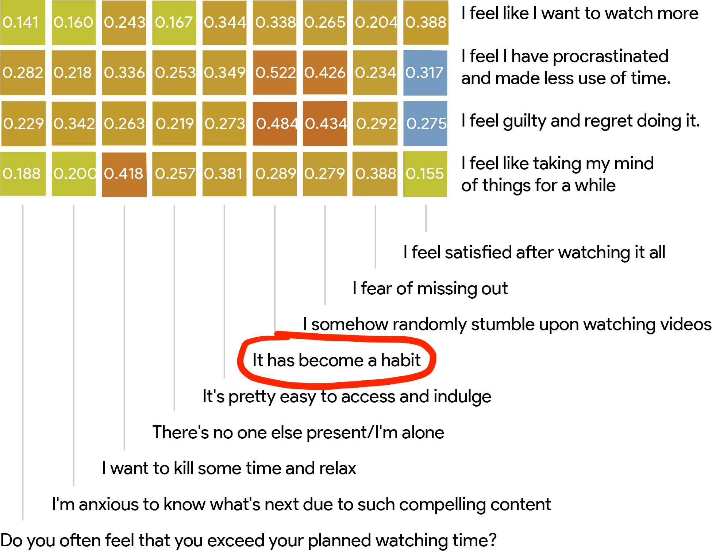

Designing for Digital Well-Being
Design proposals for exploring digital well-being.
Stakeholders - Designers of video-streaming platforms.

Compulsive binge-watching habit
Binge-watching videos has become not only a topic of social interation but also an ever-increasing addiction with the availability of easy internet access and ubiquitous computing. Data consumption has drastically increased specifically because of this reason in the last decade. The side effects of such an addiction vary from various physiological effects such as blurry eyes, loss of stamina and increased heart attack chances to psychological effects such as anxiety, depression etc. With the video content getting more and more compelling each day, season producers are releasing their episodes all at once for people to indulge in, while the algorithms behind the recommended suggestions reinforce the likes and desires of users, making this a vicious cycle of compulsive behavior that gets embedded in the binge watchers viewing habits. We wanted to explore if the design of UI elements had an effect on enhancing the binge-watching behavior among the other known factors.
The study involved dour stages.
- An exploratory study that confirmed the hypothesis, i.e. UI of video streaming apps is responsible for aggravating the binge-watching behaviour.
- An online diary study that revealed the patterns of state of mind and moods of users while interacting with UI of video streaming platforms.
- Characterization of UI dark patterns in popular video streaming platforms like Netflix, Disney+ Hotstar, PrimeVideo and Youtube.
- Formulation of design suggestions that can help in safeguarding unintended behaviors of compulsive viewing due to popular features like Autoplay and Recommendations.
General survey
Initially, a general exploratory survey questionnaire seeking an insight on factors and reasons responsible for augmenting and promoting excessive video watching, conducted on 180 participants, revealed the viewing behaviour of university level Indian population. The questions asked were a mix of objective-type, likert-scale rating based, and subjective-types, seeking self-reporting of participants on their viewing behaviour. A correlation was drawn on the factors promoting binge-watching like content, UI of the streaming platform, psychological factors, contextual factors, social factors etc. with the negative feelings of guilt, anxiety etc. usually followed at the end of a binge-watching session. Around 75 % participants agreed that UI plays at least some part in augmenting the binge-watching behaviour. This gave us confidence to proceed and further research on the exact role of user interface in promoting binge watching.
Results of Online Diary Study
We define two stages which are important to analyze in a video watching session, the video selection (interaction) phase and the video completion phase.Video Selection phase - We refer to video selection phase as the phase where users interact with the UI features of streaming platform to select a video for viewing. We use this for analyzing user state of mind.
- As observed from Figure 1(a), as users move from the first 2 videos towards the last 2, or as users move from the start of a viewing session towards the end, the percentage of people who view videos mindlessly increases by 24.8% in Autoplay, as compared to the percentage increase in mindless viewing due to Recommendations, which is 3.5%.
- As users move from the start of a viewing session towards the end, they move from liking a video suggestion on Autoplay, to mindlessly letting it play, and finally to a margin of uncertainty (somewhere between liking the Autoplay suggestion to mindlessly using it) (Figure 2(a)). The interviews revealed two explanations for this. Firstly, most Autoplay suggestions were used by users to complete a story in a series (continuous content format of story development over multiple episodes). Therefore, even if the user did not like a story, they watched the video so that a closure could be achieved. P6 said when discussing Autoplay, ``5 seconds left on Autoplay and then you’re like never mind, it has started already. I can’t stop it because once the content starts and I’m about to cancel or exit, it feels like you’re leaving it midway. There’s this strange feeling of missing out on something. It's only later when you have lost a lot of time that you realize that I had no reason to complete the video, maybe other than to watch how the story ends.'' Secondly, while watching a series, users did not have enough time in the Autoplay timer to pause to reflect and discuss about the recently concluded episode of a story clearly, or to make a conscious decision to stop watching. P8 said, "Watching credits should be default action when one is watching a story. An episode usually finishes at a watershed moment, which requires thinking and discussions with fellow watchers, which are arguably denied by Autoplay after conclusion of an episode. Honestly, this could be avoidable. It ruins the viewing experience."
- As users move from the start of a viewing session toward the end of a viewing session, they move from a margin of uncertainty, to liking a video suggestion through Recommendations, and finally to mindlessly selecting a Recommendation suggestion (Figure 2(a)). The interviews revealed that this might be because most users at the start of the session were not sure of which Recommended video to select in the selection phase. But since Recommendations continuously keeps recommending on the basis of previous watching history after completing each video, people start liking the suggestions as it starts matching their current mood. P5 said, ``Recommendations are good to get started with. I get to choose the topic of the videos that I have watched currently.'' However, towards the end of a viewing session, users are usually exhausted and bored with the presented Recommendations. P4 said, ``As you keep selecting the videos from Recommendations in YouTube, it feels like a rabbit hole, you start disliking the viewing experience. I mean it might be good to have a wider range of recommendations at times, like Netflix does.''

- As observed from Figure 3(a), unplanned viewers who tend to extend their viewing sessions increase chances of feeling regret by 34.02% while using Recommendations. The percentage increase in regret due to Autoplay is 19.8%. Although the percentage increase for both Autoplay and Recommendations are high here, the percentage increase in regret due to Recommendations is much higher and much more problematic.
- As users move from the start of a viewing session towards the end of a viewing session, there are two most prominent feelings after finishing a video selected using Autoplay. One is a feeling of dissatisfacton due to content and regret of over-watching the amount of content. Second is satisfacton of content but regret of over-watching the amount of content (Figure 2(b)). This result was very significant in our findings. The interviews revealed that the reason behind this could be Autoplay's way of working while users view a series, which is to continuously enforce content to users that they like and force them to watch back to back episodes in a season until they finish the entire season off. P7 said, ``It's almost predatory, you can't have any discussions with family or friends, you hardly get any time to interact with the UI in the limited timer, and there you go, another episode starts.''
- As users move from the start of a viewing session towards the end of a viewing session, the most prominent feeling after finishing a video selected using Recommendations is dissatisfaction due to the content watched along with over-watching (Figure 2(b)). This result was very significant in our findings. We also observed that the odds of an extended session is more when a user uses Recommendation than Autoplay, as a user moves from the start to the end of a session. Hence, we conclude that Recommendations causes more regretful extended viewing sessions than Autoplay as with Autoplay suggestions the user watches the desired content which is not the case with Recommendation suggestions. The interviews revealed that this might be because of undesired Recommendations which people end up watching and eventually wasting time on. P12 said, ``I usually watch the series recommended by a friend or which is trending, so I don't have to go through the Recommended videos.'' P10 said, ``Just because the medium is easy to use, and not as hard to get onto as maybe reading a book, its easy to just start watching whatever Recommendation you get. Its the best time pass, but usually I feel like I could have watched something better, or maybe have done something more productive.''
- ``Feature fog'' refers to UI patterns that induce unawareness by reducing autonomy of monitoring user time spent, and is related to Brignull's ``hidden information'' and Gray's ``interface interference''. These UI patterns are designed so that the user less able to get feedback on time spent engaged in a viewing session. For example, the time elapsed feature that lets you monitor how much time has elapsed since the start of video is missing from Netflix.
- ``Extreme countdown'' refers to UI patterns that have a timer and that execute automatically if not interrupted within the short period of time. Such patterns cause unintended behaviors of over-watching. These patterns induce pressure situations, especially when present socially, to make a decision within the given time. These patterns have been proven to reduce user autonomy in making conscious decisions, especially as time increases in a video watching session.
- ``Switchoff delay'' refers to UI patterns that promote strategies of hiding restrictive usage features in the default UI, and can be considered a variant of Brignull's ``hidden information'' or Gray's ``interface interference'' categories. Such options prevent people from breaking mindless extended viewing patterns instantly. Alternatively presented, these features could act as active friction design elements in reducing unnecessary watching times for many users.
- ``Attention quicksand'' refers to UI patterns that instantly start without conscious user action. They instantly grab user attention and divert them from what could otherwise be a different online behavior. These UI patterns have are specifically attention-catching and diverte user attentions, thereby causing unintended viewing behaviors.
- ``Bias grind'' refers to UI patterns that disproportionately overload user interests and biases, and is related to Brignull's ``aesthetic manipulation.'' Infinitely long scroll of Recommendations based on previous watching history, provide a choice overload, which is a phenomenon of presenting too many choices to users. This has has been associated with unhappiness, decision fatigue, choosing the default option, and choice deferral in previous studies.
- Autoplay nudges - Since autoplay enforced a drastic (24.8%) increase in mindless behaviors with the progression of viewing duration in a video session, design safeguards like nudges (Cox et al, 2016) could be particularly useful in prompting a user to make a conscious interaction before continuing to watch more videos.
- Conscious default UI interactions - The only options available in Autoplay while video watching a series are `Watch Credits' and `Play Next'. While currently the default option for video watching is selecting `Play Next' after a brief amount of time, the default option could instead be changed to `Skip Credits' and then require a conscious interaction in order to begin playing the next episode of the series.
- Varied recommendations - Netflix is a good case in point for other video streaming platforms in that it tries to maintain categories and introduce varied Recommendations that users can choose from. By effectively categorizing personalized recommendations, the platform helps the user in making a decision resulting in well informed and better utilization of their engagement times with the platform.
- Alternative recommendation nudges - Since suggesting new recommendations currently work on providing video options that extend the user interests and biases over the previous watching history, design safeguards that timely refresh Recommendations randomly and provide nudges for introducing something new after a particular threshold of Recommendations might be helpful to break out of the set list of options that users are engaged in. This can help expose them to new personal interests, potentially enhancing and broadening their interests and moods, thereby reducing mindless viewing.
- I was the team lead for the project.
- I was directly responsible for managing the two interns working with me on the project.
- I designed the initial exploratory questionnaire that helped in coming up with the hypothesis of the project, which was, user interface design of video streaming platforms play an essential role in promoting binge-watching.
- I, along with the team members, was responsible for analyzing the data from the exploratory questionnaire.
- After detailed discussions within the team, the team designed all the user studies after consultation with Dr. Aman Parnami, the project advisor.
- I read psychology related studies to draft the questions and protocol of the open-ended interview.
- All the team members together transcribed the interviews and after discussions, came up with 9 convergent themes.
- I, along with the team members, designed UI proposals, keeping in mind the existing state of system level and app level access to information in mobile devices.
- I was responsible for giving an ethic-oriented direction to the research paper after doing an extensive observation study on the existing dark patterns in various artifacts as well as reading dark patterns related research papers.

Dark patterns
A dark pattern, coined by Harry Brignull in 2010, is defined as "a user interface that has been carefully crafted to trick users into doing things... they are not mistakes, they are carefully crafted with a solid understanding of human psychology, and do not have the user’s interests in mind". We found out that there was a lot of scope to recognise dark patterns in product designs, especially as seen from the end-user behavior in practice. Following in the works of previous activists like Harry Brignull who coined the term dark patterns, we introduced a definition of dark patterns as seen from the perspective of long term behaviour in terms of video watching. We propose that while these features are useful, these features ought to have safeguard measures in long term from a user-centric design philosophy or they should be classified as dark.

 Following are the five 5 dark patterns on video streaming platforms -
Following are the five 5 dark patterns on video streaming platforms -
.png)
Design proposals on YouTube
Following from the previous studies, we realized the need to come up with design proposals for raising awareness on the minimal costs involved in inculcating digital well-being variables as traded off against engagement variables in interface design. We defined an exhaustive list of 7 strategies from design feature analysis of previous studies, factors promoting binge-watching and workaround solutions currently employed by users to achieve digital well-being. Each of these seven strategy instances were shown and designed with minimal intrusion to the existing design features of YouTube.
Quote
Clearly, one can't deny that autoplay is useful, but it does take away the time from you to think what to watch next or whether to watch or not, and when it just starts, you just give in to the choice made for you.
I worked on this project with Kyzyl Monteiro (undergraduate researcher at Weave Lab) and Jaivrat Saroha (intern at Weave Lab). Kyzyl was responsible for providing hands-on coding and designing various image proposals. Jaivrat was responsible for providing assistive literature review on the work. Dr. Angus Forbes and Dr. Aman Parnami were the advisor for the work.
My responsibilities
** Accepted at DIS 2022 (in press).